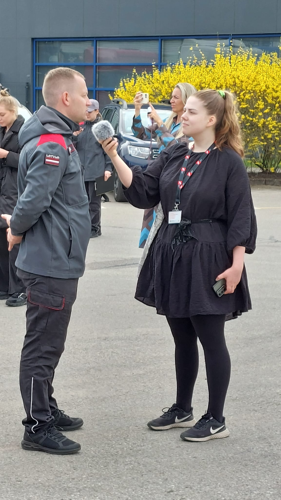
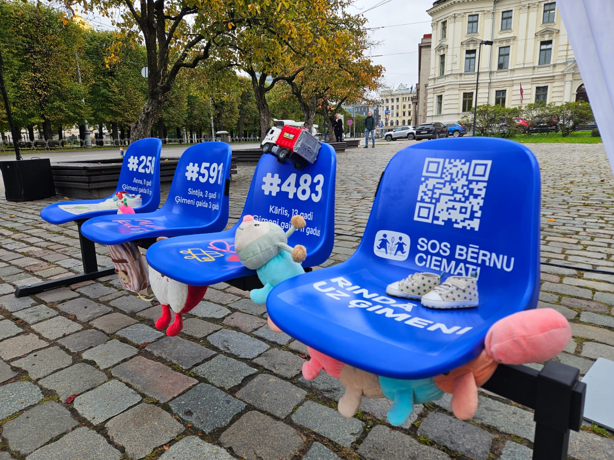

Europass profile
For a complete and standardized overview of my academic background, language skills, and work qualifications, you can view my official Europass CV online.

A motivated and detail-oriented journalist with a passion for news media, radio broadcasting and digital content creation.
Throughout my career I have gained experience working in various newsrooms and entertainment media.
I am currently expanding my skills with various programming languages and knowledge management systems during my Master's studies in Digital Humanities.
For a complete and standardized overview of my academic background, language skills, and work qualifications, you can view my official Europass CV online.

Read and listen to my most recent work on LSM.
Additional articles available on my LSM author page.